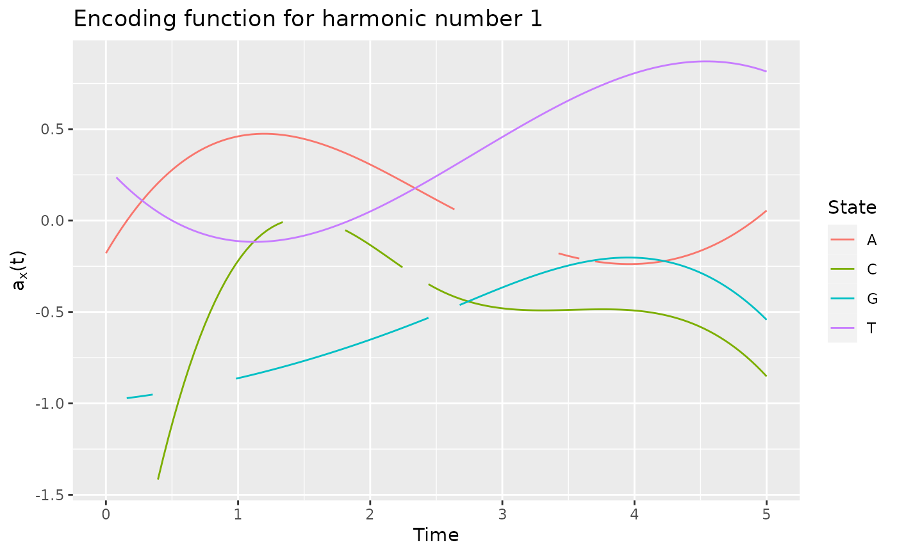
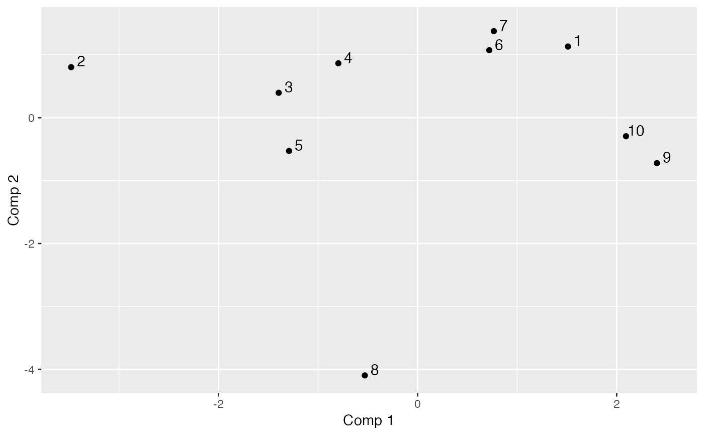

Compute the optimal encoding for categorical functional data using an extension of the multiple correspondence analysis to a stochastic process.
data.frame containing id, id of the trajectory, time, time at which a change occurs and
state, associated state. All individuals must begin at the same time T0 and end at the same time Tmax
(use cut_data).
basis created using the fda package (cf. create.basis).
if TRUE, perform a bootstrap to estimate the variance of encoding functions coefficients
number of bootstrap samples
size of bootstrap samples relative to the number of individuals: propBootstrap * number of individuals
number of cores used for parallelization. Default is the half of cores.
if TRUE print some information
parameters for integrate function (see details).
A list containing:
eigenvalues eigenvalues
alpha optimal encoding coefficients associated with each eigenvectors
pc principal components
F matrix containing the \(F_{(x,i)(y,j)}\)
V matrix containing the \(V_{(x,i)}\)
G covariance matrix of V
basisobj basisobj input parameter
pt output of estimate_pt function
bootstrap Only if computeCI = TRUE. Output of every bootstrap run
varAlpha Only if computeCI = TRUE. Variance of alpha parameters
runTime Total elapsed time
See the vignette for the mathematical background: RShowDoc("cfda", package = "cfda")
Extra parameters (...) for the integrate function can be:
subdivisions the maximum number of subintervals.
rel.tol relative accuracy requested.
abs.tol absolute accuracy requested.
Deville J.C. (1982) Analyse de données chronologiques qualitatives : comment analyser des calendriers ?, Annales de l'INSEE, No 45, p. 45-104.
Deville J.C. et Saporta G. (1980) Analyse harmonique qualitative, DIDAY et al. (editors), Data Analysis and Informatics, North Holland, p. 375-389.
Saporta G. (1981) Méthodes exploratoires d'analyse de données temporelles, Cahiers du B.U.R.O, Université Pierre et Marie Curie, 37-38, Paris.
Preda C, Grimonprez Q, Vandewalle V. Categorical Functional Data Analysis. The cfda R Package. Mathematics. 2021; 9(23):3074. https://doi.org/10.3390/math9233074
plot.fmca print.fmca summary.fmca plotComponent get_encoding
Other encoding functions:
get_encoding(),
plot.fmca(),
plotComponent(),
plotEigenvalues(),
predict.fmca(),
print.fmca(),
summary.fmca()
# Simulate the Jukes-Cantor model of nucleotide replacement
K <- 4
Tmax <- 5
PJK <- matrix(1 / 3, nrow = K, ncol = K) - diag(rep(1 / 3, K))
lambda_PJK <- c(1, 1, 1, 1)
d_JK <- generate_Markov(
n = 10, K = K, P = PJK, lambda = lambda_PJK, Tmax = Tmax,
labels = c("A", "C", "G", "T")
)
d_JK2 <- cut_data(d_JK, Tmax)
# create basis object
m <- 5
b <- create.bspline.basis(c(0, Tmax), nbasis = m, norder = 4)
# compute encoding
encoding <- compute_optimal_encoding(d_JK2, b, computeCI = FALSE, nCores = 1)
#> ######### Compute encoding #########
#> Number of individuals: 10
#> Number of states: 4
#> Basis type: bspline
#> Number of basis functions: 5
#> Number of cores: 1
#> ---- Compute V matrix:
#>
| | 0 % ~calculating
|===== | 10% ~00s
|========== | 20% ~00s
|=============== | 30% ~00s
|==================== | 40% ~00s
|========================= | 50% ~00s
|============================== | 60% ~00s
|=================================== | 70% ~00s
|======================================== | 80% ~00s
|============================================= | 90% ~00s
|==================================================| 100% elapsed=00s
#>
#> DONE in 0.08s
#> ---- Compute U matrix:
#>
| | 0 % ~calculating
|===== | 10% ~00s
|========== | 20% ~00s
|=============== | 30% ~00s
|==================== | 40% ~00s
|========================= | 50% ~00s
|============================== | 60% ~00s
|=================================== | 70% ~00s
|======================================== | 80% ~00s
|============================================= | 90% ~00s
|==================================================| 100% elapsed=00s
#>
#> DONE in 0.46s
#> ---- Compute encoding:
#> DONE in 0s
#> Run Time: 0.55s
summary(encoding)
#> #### FMCA
#>
#> ## Data
#> Number of individuals: 10
#> Number of states: 4
#> Time Range: 0 to 5
#> States: A C G T
#>
#> ## Basis
#> Type: bspline
#> Number of basis functions: 5
#>
#> ## Outputs
#> Eigenvalues:
#> 2.218392 1.937556 1.784195 1.437139 1.006474 0.5203247
#>
#> Explained variance:
#> 0.233 0.436 0.624 0.774 0.88 0.935
#>
#> Optimal encoding:
#> A C G T
#> [1,] -0.17857528 -2.9546581 -0.9845094 0.2970695
#> [2,] 0.84661591 1.0606785 -0.9208497 -0.3731247
#> [3,] 0.03111824 -1.1736301 -0.5978684 0.1589345
#> [4,] -0.45340458 -0.1995142 0.0581532 1.0269334
#> [5,] 0.05504888 -0.8522623 -0.5425548 0.8150775
#>
#> Principal components:
#> [,1] [,2] [,3] [,4] [,5] [,6]
#> 1 0.1009265 1.7834406 -0.10205854 -1.1204881 1.5380991 0.34439384
#> 2 -2.1883565 -2.4501377 0.66818236 0.3407541 0.8269324 -0.30967634
#> 3 -0.5637328 -0.4670427 2.43041054 -0.1406616 -0.7302521 0.26113611
#> 4 2.3301199 -0.3417038 0.01022626 0.3416693 0.4806339 -0.42944169
#> 5 -1.4152094 -0.4455948 -2.90049296 -0.7621926 -0.8536573 -0.19485874
#> 6 -1.4478108 1.8617776 -0.18646993 1.8808029 0.8624878 -0.01407049
#>
#> Total elapsed time: 0.55 s
# plot the optimal encoding
plot(encoding)
#> Warning: Removed 13 row(s) containing missing values (geom_path).

# plot the two first components
plotComponent(encoding, comp = c(1, 2))

# extract the optimal encoding
get_encoding(encoding, harm = 1)
#> $x
#> [1] 0.00000000 0.03937008 0.07874016 0.11811024 0.15748031 0.19685039
#> [7] 0.23622047 0.27559055 0.31496063 0.35433071 0.39370079 0.43307087
#> [13] 0.47244094 0.51181102 0.55118110 0.59055118 0.62992126 0.66929134
#> [19] 0.70866142 0.74803150 0.78740157 0.82677165 0.86614173 0.90551181
#> [25] 0.94488189 0.98425197 1.02362205 1.06299213 1.10236220 1.14173228
#> [31] 1.18110236 1.22047244 1.25984252 1.29921260 1.33858268 1.37795276
#> [37] 1.41732283 1.45669291 1.49606299 1.53543307 1.57480315 1.61417323
#> [43] 1.65354331 1.69291339 1.73228346 1.77165354 1.81102362 1.85039370
#> [49] 1.88976378 1.92913386 1.96850394 2.00787402 2.04724409 2.08661417
#> [55] 2.12598425 2.16535433 2.20472441 2.24409449 2.28346457 2.32283465
#> [61] 2.36220472 2.40157480 2.44094488 2.48031496 2.51968504 2.55905512
#> [67] 2.59842520 2.63779528 2.67716535 2.71653543 2.75590551 2.79527559
#> [73] 2.83464567 2.87401575 2.91338583 2.95275591 2.99212598 3.03149606
#> [79] 3.07086614 3.11023622 3.14960630 3.18897638 3.22834646 3.26771654
#> [85] 3.30708661 3.34645669 3.38582677 3.42519685 3.46456693 3.50393701
#> [91] 3.54330709 3.58267717 3.62204724 3.66141732 3.70078740 3.74015748
#> [97] 3.77952756 3.81889764 3.85826772 3.89763780 3.93700787 3.97637795
#> [103] 4.01574803 4.05511811 4.09448819 4.13385827 4.17322835 4.21259843
#> [109] 4.25196850 4.29133858 4.33070866 4.37007874 4.40944882 4.44881890
#> [115] 4.48818898 4.52755906 4.56692913 4.60629921 4.64566929 4.68503937
#> [121] 4.72440945 4.76377953 4.80314961 4.84251969 4.88188976 4.92125984
#> [127] 4.96062992 5.00000000
#>
#> $y
#> A C G T
#> [1,] -0.178575284 NA NA NA
#> [2,] -0.131201244 NA -0.9814292 NA
#> [3,] -0.085923907 NA NA 0.236503688
#> [4,] -0.042707753 NA NA 0.208260487
#> [5,] -0.001517268 NA -0.9713183 0.181350478
#> [6,] 0.037683068 NA -0.9676592 0.155753691
#> [7,] 0.074928770 NA -0.9638562 0.131450154
#> [8,] 0.110255357 NA -0.9599096 0.108419897
#> [9,] 0.143698345 NA -0.9558199 0.086642950
#> [10,] 0.175293252 NA -0.9515873 0.066099342
#> [11,] 0.205075594 -1.416329123 NA 0.046769102
#> [12,] 0.233080889 -1.299146565 NA 0.028632260
#> [13,] 0.259344654 -1.188071442 NA 0.011668845
#> [14,] 0.283902407 -1.082964688 NA -0.004141114
#> [15,] 0.306789664 -0.983687235 NA -0.018817586
#> [16,] 0.328041943 -0.890100019 NA -0.032380544
#> [17,] 0.347694760 -0.802063973 NA -0.044849956
#> [18,] 0.365783634 -0.719440030 NA -0.056245795
#> [19,] 0.382344081 -0.642089126 NA -0.066588030
#> [20,] 0.397411619 -0.569872193 NA -0.075896633
#> [21,] 0.411021764 -0.502650166 NA -0.084191573
#> [22,] 0.423210034 -0.440283979 NA -0.091492822
#> [23,] 0.434011946 -0.382634565 NA -0.097820350
#> [24,] 0.443463018 -0.329562858 NA -0.103194127
#> [25,] 0.451598766 -0.280929792 NA -0.107634125
#> [26,] 0.458454707 -0.236596302 -0.8647185 -0.111160314
#> [27,] 0.464066360 -0.196423320 -0.8581099 -0.113792664
#> [28,] 0.468469240 -0.160271782 -0.8513645 -0.115551146
#> [29,] 0.471698866 -0.128002620 -0.8444829 -0.116455731
#> [30,] 0.473790754 -0.099476768 -0.8374652 -0.116526390
#> [31,] 0.474780422 -0.074555162 -0.8303118 -0.115783092
#> [32,] 0.474703387 -0.053098733 -0.8230231 -0.114245809
#> [33,] 0.473595166 -0.034968417 -0.8155995 -0.111934511
#> [34,] 0.471491276 -0.020025147 -0.8080411 -0.108869169
#> [35,] 0.468427234 -0.008129857 -0.8003485 -0.105069754
#> [36,] 0.464438558 NA -0.7925219 -0.100556235
#> [37,] 0.459560765 NA -0.7845617 -0.095348584
#> [38,] 0.453829372 NA -0.7764682 -0.089466771
#> [39,] 0.447279896 NA -0.7682418 -0.082930768
#> [40,] 0.439947854 NA -0.7598828 -0.075760543
#> [41,] 0.431868764 NA -0.7513915 -0.067976069
#> [42,] 0.423078143 NA -0.7427683 -0.059597316
#> [43,] 0.413611508 NA -0.7340135 -0.050644254
#> [44,] 0.403504376 NA -0.7251275 -0.041136854
#> [45,] 0.392792264 NA -0.7161106 -0.031095086
#> [46,] 0.381510690 NA -0.7069631 -0.020538922
#> [47,] 0.369695171 -0.052508762 -0.6976855 -0.009488331
#> [48,] 0.357381224 -0.067582197 -0.6882779 0.002036715
#> [49,] 0.344604366 -0.083756687 -0.6787409 0.014016246
#> [50,] 0.331400114 -0.100893165 -0.6690747 0.026430292
#> [51,] 0.317803986 -0.118852566 -0.6592796 0.039258881
#> [52,] 0.303851498 -0.137495822 -0.6493560 0.052482043
#> [53,] 0.289578169 -0.156683869 -0.6393043 0.066079808
#> [54,] 0.275019514 -0.176277640 -0.6291247 0.080032205
#> [55,] 0.260211052 -0.196138069 -0.6188177 0.094319263
#> [56,] 0.245188300 -0.216126089 -0.6083835 0.108921011
#> [57,] 0.229986774 -0.236102635 -0.5978226 0.123817480
#> [58,] 0.214641992 -0.255928641 -0.5871352 0.138988698
#> [59,] 0.199189471 NA -0.5763216 0.154414695
#> [60,] 0.183664729 NA -0.5653824 0.170075500
#> [61,] 0.168103282 NA -0.5543176 0.185951143
#> [62,] 0.152540648 NA -0.5431278 0.202021653
#> [63,] 0.137012343 -0.347933249 -0.5318133 0.218267059
#> [64,] 0.121553886 -0.363935623 NA 0.234667391
#> [65,] 0.106200380 -0.378817840 NA 0.251202738
#> [66,] 0.090977408 -0.392533118 NA 0.267854563
#> [67,] 0.075901039 -0.405123117 NA 0.284605704
#> [68,] 0.060986924 -0.416633343 NA 0.301439059
#> [69,] NA -0.427109300 -0.4616805 0.318337525
#> [70,] NA -0.436596494 -0.4497954 0.335284001
#> [71,] NA -0.445140429 -0.4379168 0.352261382
#> [72,] NA -0.452786611 -0.4260686 0.369252568
#> [73,] NA -0.459580544 -0.4142742 0.386240455
#> [74,] NA -0.465567734 -0.4025576 0.403207942
#> [75,] NA -0.470793686 -0.3909423 0.420137925
#> [76,] NA -0.475303904 -0.3794522 0.437013302
#> [77,] NA -0.479143895 -0.3681108 0.453816971
#> [78,] NA -0.482359162 -0.3569420 0.470531830
#> [79,] NA -0.484995211 -0.3459695 0.487140775
#> [80,] NA -0.487097548 -0.3352169 0.503626705
#> [81,] NA -0.488711676 -0.3247079 0.519972518
#> [82,] NA -0.489883101 -0.3144664 0.536161109
#> [83,] NA -0.490657329 -0.3045159 0.552175378
#> [84,] NA -0.491079864 -0.2948803 0.567998222
#> [85,] NA -0.491196211 -0.2855832 0.583612539
#> [86,] NA -0.491051875 -0.2766484 0.599001225
#> [87,] NA -0.490692362 -0.2680995 0.614147178
#> [88,] -0.179116853 -0.490163177 -0.2599602 0.629033297
#> [89,] -0.187007862 -0.489509823 -0.2522544 0.643642479
#> [90,] -0.194392258 -0.488777808 -0.2450056 0.657957620
#> [91,] -0.201254389 -0.488012635 -0.2382377 0.671961619
#> [92,] -0.207578602 -0.487259809 -0.2319743 0.685637374
#> [93,] NA -0.486564837 -0.2262391 0.698967782
#> [94,] NA -0.485973222 -0.2210559 0.711935740
#> [95,] -0.223167205 -0.485530470 -0.2164483 0.724524146
#> [96,] -0.227183219 -0.485282086 -0.2124401 0.736715897
#> [97,] -0.230583052 -0.485273574 -0.2090551 0.748493892
#> [98,] -0.233351051 -0.485550441 -0.2063168 0.759841028
#> [99,] -0.235471563 -0.486158191 -0.2042490 0.770740201
#> [100,] -0.236928936 -0.487142329 -0.2028755 0.781174311
#> [101,] -0.237707517 -0.488548360 -0.2022200 0.791126254
#> [102,] -0.237791654 -0.490421789 -0.2023060 0.800578928
#> [103,] -0.237165694 -0.492808122 -0.2031575 0.809515231
#> [104,] -0.235813984 -0.495752862 -0.2047981 0.817918060
#> [105,] -0.233720871 -0.499301517 -0.2072515 0.825770312
#> [106,] -0.230870703 -0.503499589 -0.2105413 0.833054886
#> [107,] -0.227247828 -0.508392585 -0.2146915 0.839754678
#> [108,] -0.222836592 -0.514026010 -0.2197255 0.845852587
#> [109,] -0.217621343 -0.520445368 -0.2256672 0.851331510
#> [110,] -0.211586428 -0.527696165 -0.2325403 0.856174344
#> [111,] -0.204716195 -0.535823906 -0.2403685 0.860363988
#> [112,] -0.196994992 -0.544874095 -0.2491755 0.863883338
#> [113,] -0.188407164 -0.554892238 -0.2589850 0.866715292
#> [114,] -0.178937060 -0.565923840 -0.2698208 0.868842748
#> [115,] -0.168569028 -0.578014406 -0.2817064 0.870248604
#> [116,] -0.157287413 -0.591209441 -0.2946658 0.870915756
#> [117,] -0.145076565 -0.605554450 -0.3087225 0.870827103
#> [118,] -0.131920829 -0.621094938 -0.3239002 0.869965542
#> [119,] -0.117804555 -0.637876410 -0.3402228 0.868313971
#> [120,] -0.102712088 -0.655944371 -0.3577139 0.865855286
#> [121,] -0.086627776 -0.675344327 -0.3763973 0.862572387
#> [122,] -0.069535967 -0.696121782 -0.3962965 0.858448169
#> [123,] -0.051421007 -0.718322241 -0.4174354 0.853465532
#> [124,] -0.032267245 -0.741991210 -0.4398377 0.847607372
#> [125,] -0.012059028 -0.767174193 -0.4635271 0.840856587
#> [126,] 0.009219298 -0.793916695 -0.4885272 0.833196075
#> [127,] 0.031583384 -0.822264222 -0.5148619 0.824608733
#> [128,] 0.055048883 -0.852262279 -0.5425548 0.815077458
#>